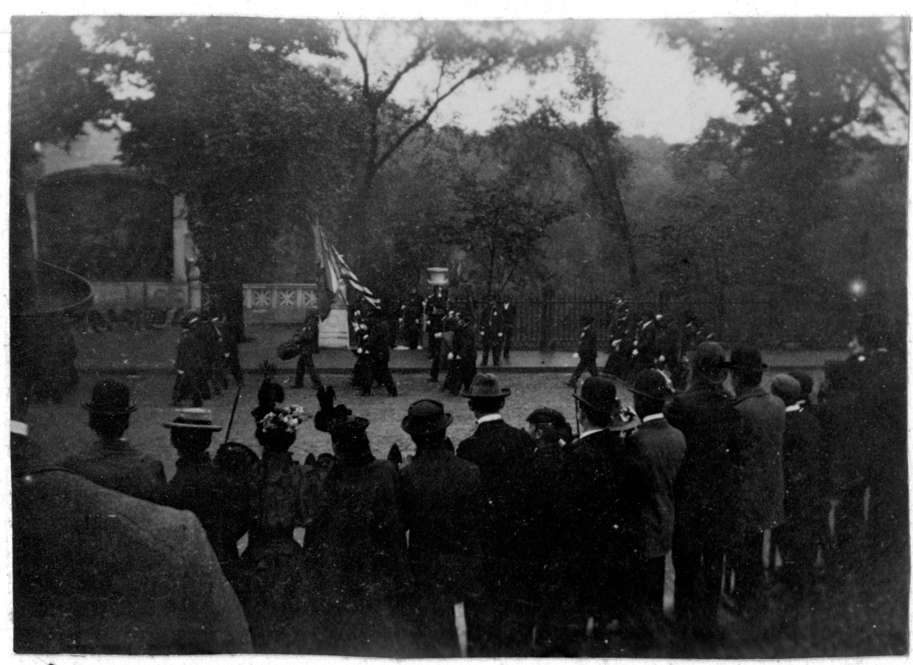

Library Experience
Digitization and Imaging

Veterans of the 54th Massachusetts Volunteer Regiment march at the unveiling of the Shaw Memorial, 1897. Image scanned from a gelatin silver print taken by Augusta Saint-Gaudens, wife of the sculptor of the Memorial.

Coast near Mont-Saint-Michel by Alexandre Nozal (1852-1929)

Sketch of Temple at Acropolis by Stanford White (1853-1906)
Archives and Special Collections
Processing and description experience
- Arranged and described 21st century manuscript collections for an academic special collections in Washington, DC.
- Processed photographic and audio-visual collections for libraries in Western Massachusetts.
- Created DACS compliant finding aids for manuscript collections related to 19th century American Art history for the National Park Service.
- Completed archives procesing internship at a special collection and archives of a university in New Hampshire.
Reference and Outreach
- Provide reference services for the users of an academic special collections library in Washington, DC.
- Support primary source and library research of National Park Service historians, curators, historic preservations, and educators.
- Promote cultural heritage collections through public programing and instruction related to primary source research.